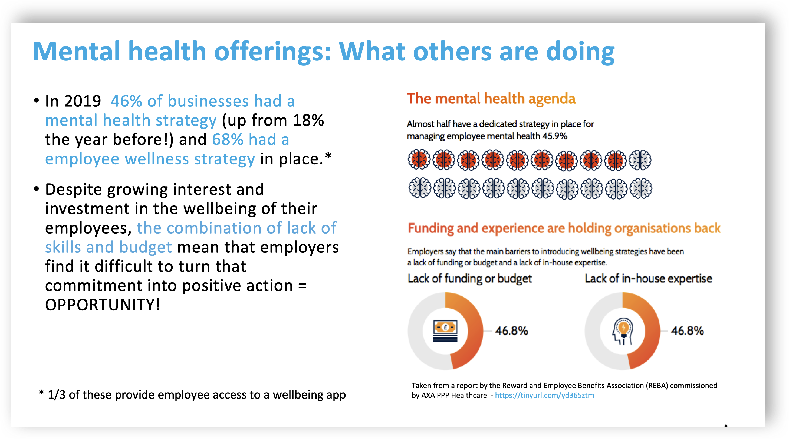
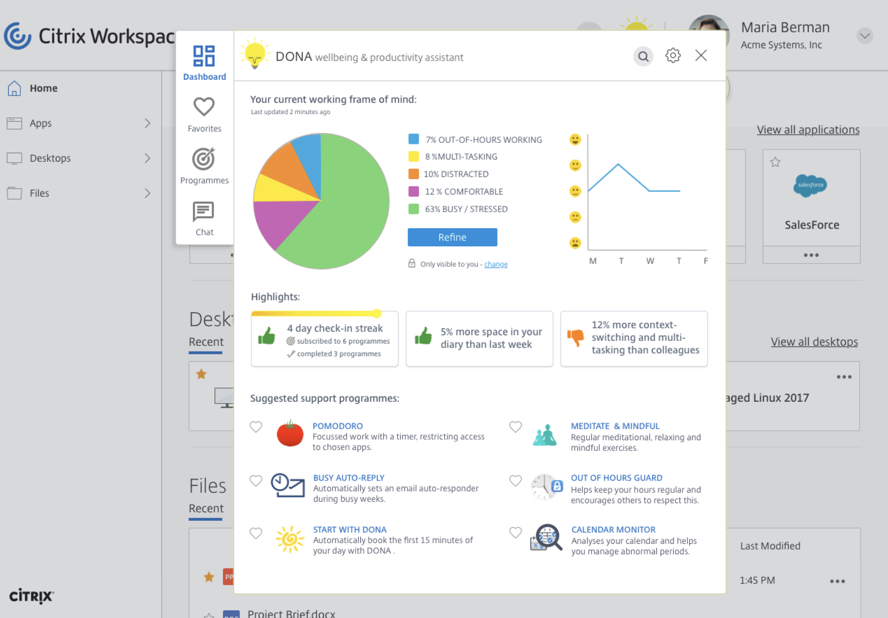
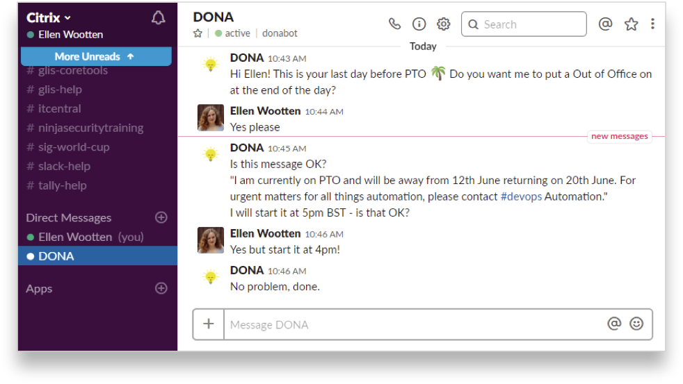
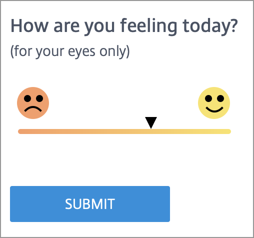
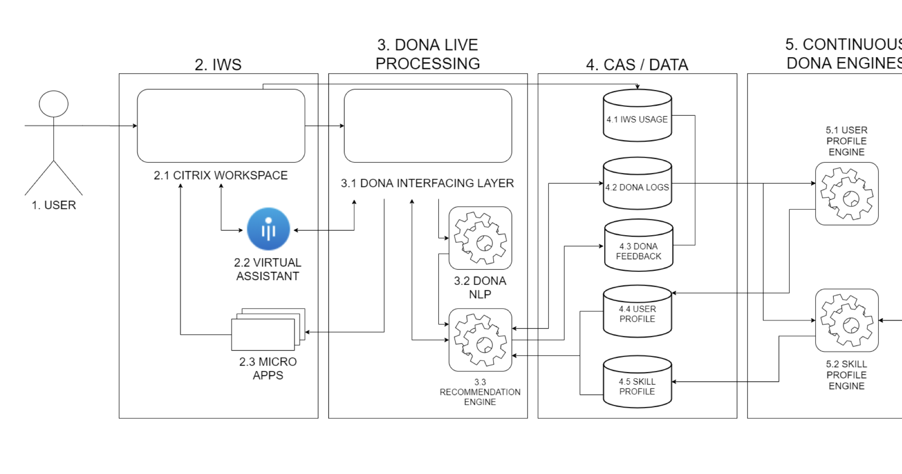

Context
A market gap hiding in plain sight
By the late 2010s, employee wellbeing had moved from fringe benefit to boardroom agenda. Mental health strategies were proliferating. The Right to Disconnect was entering legislation. Productivity loss from poor wellbeing was quantifiable — estimated at around 5% of UK GDP.
Yet most employers lacked the skills, budget, and infrastructure to operationalise wellbeing programmes. They knew the problem existed. They didn't know what to do about it — or how to measure whether anything worked.
Citrix Workspace, already the daily interface for millions of knowledge workers, was the natural place to embed support — not as a separate app, but as an ambient assistant that understood context, frame of mind, and working patterns.

Challenge
From concept to credible product
DONA needed to be credible to three audiences simultaneously: executives who controlled budget, engineers who would build it, and end users who would (or wouldn't) engage with daily check-ins and suggested programmes.
Each audience required a different story, a different level of abstraction, and a different kind of evidence. The design challenge was not just the interface — it was the translation layer between behavioural insight, technical architecture, and commercial narrative.

What I did
Validate before you build
Before committing engineering resources, I designed a series of lean validation experiments:
- Slack smoke test — a "smoke and mirrors" prototype that simulated DONA's check-in prompts in an existing channel, measuring engagement and receptivity with real data
- Innovation fair booth — physical presence at Citrix's internal innovation fair, testing the concept with employees in an informal setting
- Customer Excellence Centre — installed at the Leyland facility, observing how real users responded to wellbeing prompts in a live workspace environment
Each experiment produced different evidence for different stakeholders. The Slack test gave engineers confidence in interaction patterns. The innovation fair generated internal buzz. The Customer Excellence Centre provided user validation that executives could cite.



Evidence
Speaking to every audience
Securing executive buy-in required translating behavioural insight into business language. I produced a series of executive pitch materials covering the problem space, quantified costs, projected benefits, and realistic resourcing requirements.
For engineering, the story was architectural: how DONA would integrate with Workspace, communicate via APIs and microservices, and draw on CAS data through a continuous engine. Different fidelity, same product truth.
An in-house "Work Anywhere" marketing campaign repurposed existing Citrix brand materials to create internal momentum — turning a product concept into something people were already talking about before it shipped.

What changed
From sketched concept to live product
DONA moved from whiteboard exploration through validated prototypes to resourced development with a Design/Build/Measure loop. Features sketched years earlier remain in the live Citrix Workspace product.
What it proves
Innovation in large organisations requires more than good design — it requires translation. The ability to reframe the same product truth for executives, engineers, and end users, and to validate each claim with appropriate evidence before asking anyone to commit resources.